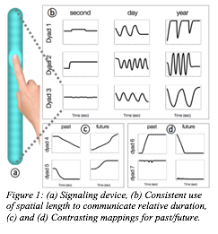

Where is tomorrow? How high is a year? Space-time metaphors emerge from individual biases, social interaction, and cultural transmission
Tyler MARGHETIS
Humans spatialize time. This occurs in artifacts like timelines, in spontaneous gestures, and in conventional language ("think back to last summer"; Núñez and Cooperrider, 2013). These links between space and time, moreover, exist both as associations in individual minds (Winter, Marghetis, and Matlock, 2015) and as shared cultural systems—such as regular polysemy—that transcend individuals (Haspelmath, 1997; Lakoff and Johnson, 1980). Understanding the origins of this "tangle of space and time" (Núñez and Cooperrider, 2013) will require analyses at multiple levels, from initial individual biases, to local cultural norms, to cultural evolution. Where do these space-time links come from, and how do individual biases interact with cultural norms? Here we present two laboratory experiments using methods from the field of Language Evolution to simulate the social and cultural emergence of space-time mappings.
In Study 1, dyads communicated about temporal concepts using only a novel, spatial signaling device: a vertical bar on a touch screen (Fig. 1b). Participants sat in separate rooms and communicated via brief ‘spatial signals’ consisting entirely of vertical movements on the touch screen. On each trial, the “sender” attempted to communicate a temporal concept (n = 18; e.g., “tomorrow,” “day after,” “future”) by sending a signal; the “receiver” had to guess the intended meaning. Dyads then received feedback and reversed their roles for the next trial. Based on past studies showing the importance for language evolution of social coordination and alignment (Fay et al., 2013; Garrod et al., 2007; Healey et al., 2007; Theissen et al., 2010), we expected participants to improve their communicative success by negotiating a set of conventional signals, but also to build on shared intuitions of how temporal concepts should be represented spatially. This design thus allow us to tease apart contributions of initial biases and social interaction.
Indeed, participants (n =16) rapidly established communication systems that utilized vertical space to represent time. Strong, shared cognitive biases were revealed by the rapid creation of systems that exhibited a number of similarities. For instance, spatial length was used by all dyads to indicate temporal duration, with larger regions of vertical space used to indicate longer durations (Fig. 1b). Social interaction, however, elaborated these early biases to establish idiosyncratic conventions. For instance, while location (up/down) was reliably used to indicate deictic time (past/future), different dyads established varied conventions for how they mapped vertical locations to temporal concepts (Fig. 1c, d). Thus, individual biases and social interaction interacted during the emergence of abstract communication systems.
While these communication systems began to capture the structure of the meaning space, no fully systematized language emerged. Dyads continued to confuse some of the more similar meanings (e.g. “tomorrow” vs. “day after”), since no conventions emerged for making these subtle distinctions. This is in line with the results of past experimental work, which has suggested that increasing regularization and the emergence of compositionality requires imperfect transmission over generations (e.g. Kirby et al., 2008). As systems are transmitted across generations, they adapt to become more learnable and predictable. We thus hypothesized that the structured but imperfect systems that emerged in Experiment 1 would evolve into more regular and stable systems if transmitted across multiple generations of interacting users. In brief, in addition to individual cognitive biases and social interaction, the emergence of fully systematized space-time mappings might require cultural transmission.
To simulate the pressures of cultural transmission, Study 2 used an iterated communication paradigm (Tamariz et al, 2012; Verhoef et al., 2015). In this paradigm, the final signals produced by one dyad are used to train the next dyad, who receive a brief training on the signals before they start interacting; the final signals of this dyad are passed on to the next dyad, creating transmission chains with multiple “generations” of language users. This approach simulates the dynamics of multi-generational cultural transmission within the controlled milieu of the lab.
We investigated the impact of cultural transmission across five chains of eight generations (n = 80). Initial results show that cultural transmission can produce communication systems that allow for perfect communication, despite the complexity and abstractness of the meaning space. This striking communicative performance reflected the gradual emergence of a systematized, compositional system in which space was used conventionally to mark nuanced distinctions between temporal concepts.
In sum, two studies focused on the interaction of mechanisms that contribute to the emergence of space-time mappings. By isolating mechanisms that operate on disparate timescales, these laboratory experiments shed light on the commonalities and variety found in space-time mappings in languages around the world.
References
Fay, N., Arbib, M. A., & Garrod, S. (2013). How to Bootstrap a Human Communication System. Cognitive Science, 37, 1356–1367.
Garrod, S., Fay, N., Lee, J., Oberlander, J., & MacLeod, T. (2007). Foundations of representation: Where might graphical symbol systems come from? Cognitive Science, 31, 961–987.
Haspelmath, M. (1997). From space to time. Munich & Newcastle: Lincom Europa.
Healey, P. G. T., Swoboda N., Umata I., & King J. (2007). Graphical language games. Cognitive Science, 31, 285–309.
Kirby, S., Cornish, H. & Smith, K. (2008) Cumulative cultural evolution in the laboratory. PNAS, 105, 10681-10686
Lakoff, G., & Johnson, M. (1980). Metaphors we live by. Chicago, IL: University of Chicago Press.
Núñez, R. & Cooperrider, K. (2013). The Tangle of Space and Time in Human Cognition. Trends in Cognitive Sciences, 17, 220-229.
Tamariz, M., Cornish, H., Roberts, S. & Kirby, S. (2012) The effect of generation turnover and interlocutor negotiation on linguistic structure. In Proceedings of EVOLANG9. World Scientific (pp. 555-556).
Theisen C. A., Oberlander J., & Kirby S. (2010). Systematicity and arbitrariness in novel communication systems. Interaction Studies, 11, 14–32
Verhoef, T., Roberts, S. G., Dingemanse, M. (2015) Emergence of systematic iconicity: Transmission, interaction and analogy. 37th Annual CogSci Conference (pp. 2481-2486) Austin, TX: Cognitive Science Society.
Winter, B., Marghetis, T., & Matlock, T. (2015). Of magnitudes and metaphors. Cortex, 64, 209-224.